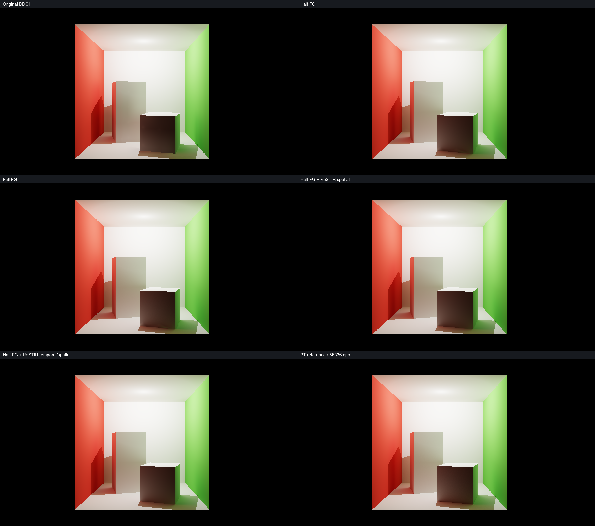
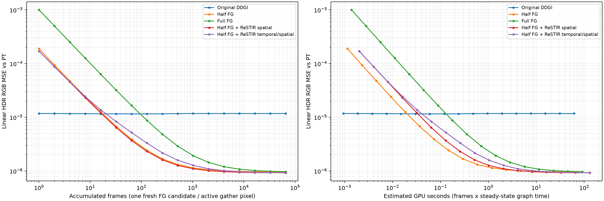
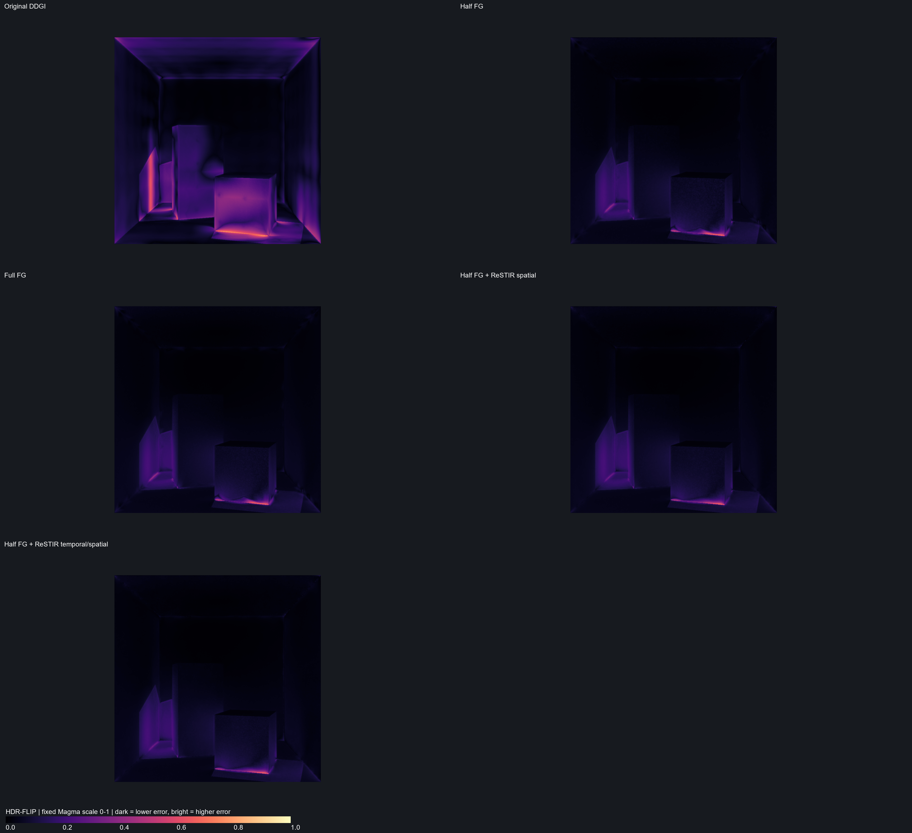
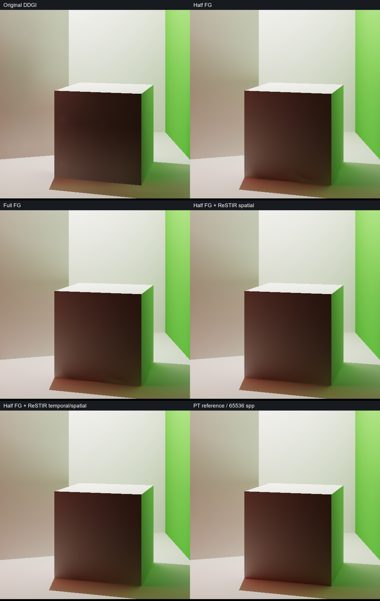

在旧 1080p 实验基础上，重新渲染原始 DDGI、半分辨率 FG、全分辨率 FG 和 PT reference，加入半分辨率 ReSTIR 的仅空间、时空复用两组。所有图片及耗时均来自本次运行，没有复用旧结果。旧报告保留。
Lambert Cornell、顶灯点光源、Test Harness 衰减、黑色环境；1920×1080，半分辨率追踪 960×540。固定相机与中心 GBuffer 采样，无 NRD、RTXDI。每组 probe 预热 2560 帧，之后持续更新；清空 Accumulate，ReSTIR 冷启动，再累计 65536 帧。与旧 1080p 报告一致，采样偏移关闭，半分辨率从 2×2 的左上像素 (2x,2y) 出发。它不是此前冻结 probe、开启 jitter 的 640×360 实验。
上述比较是有限帧结果，是否稳定见末尾检查。ReSTIR 不保证最终误差更小，也不能仅凭最终图判断收敛速度。

点击图片查看原尺寸六宫格（3840×3396）；每张单图原生 1920×1080，统一 +3EV / ACES fitted / sRGB，无各自曝光调整。
| 方案 | MSE ↓ | HDR-FLIP ↓ | 原始帧时间方差 | 累积帧时间方差 | GPU 帧 ms |
|---|---|---|---|---|---|
| 原始 DDGI | 1.175874e-05 | 0.11449 | 1.737e-08 | 5.293e-16 | 0.936 |
| 半分辨率 FG | 9.6407e-07 | 0.04630 | 0.0001814 | 2.307e-13 | 1.145 |
| 全分辨率 FG | 9.741407e-07 | 0.04618 | 0.0009703 | 1.242e-12 | 1.387 |
| 半分辨率 ReSTIR：仅空间 | 9.297973e-07 | 0.04576 | 0.0001705 | 2.19e-13 | 1.997 |
| 半分辨率 ReSTIR：时空 | 9.296438e-07 | 0.04577 | 0.0001542 | 2.657e-13 | 2.017 |
MSE 在可见表面 mask 内对线性 HDR RGB 计算；HDR-FLIP 使用 PPD 67、ACES 和同一参考图决定的曝光范围。PT 每帧 8 spp，两组独立随机种子的 32768 spp 图平均为 65536 spp，不使用降噪。参考剩余噪声估计 MSE=2.231351e-08。时间方差取末尾连续 32 帧的总体方差：原始帧在 Accumulate 前，累积帧在其后；静态累积方差小不代表运动稳定，相关样本的窗口方差也不是无偏估计器方差。旧报告是 8 帧窗口，不能直接比较方差数值。

同为 256 帧时，仅空间复用的 MSE 相对普通半分辨率 FG 为 -4.02%，时空复用为 +29.20%。本次仅空间复用有小幅等帧数收益，时空复用在中前期反而较慢；按 GPU 预算比较，中前期普通半分辨率 FG 更划算。最终误差略低不等于收敛更快。普通半分辨率 FG 还经过空间重建平滑，而全分辨率 FG 没有，因此两者的噪声不能只按射线数量解释。
左图按累积帧数比较：三种半分辨率方案每有效粗像素每帧一个新候选；ReSTIR 另有复用、可见性查询与归一化开销。普通 FG 使用原 BRDF 采样，ReSTIR 初始候选为均匀半球，因此不是只改变复用开关的采样器消融。全分辨率 FG 每帧的新候选总数约为半分辨率的四倍；原始 DDGI 没有屏幕 FG 候选。右图按实测稳态 GPU graph 时间折算，不含预热、读取和截图，显示等 GPU 预算趋势。本次各方案只有一条随机序列，不能据曲线小差距断言统计显著加速。
所有图比较同一张 PT，统一 Magma [0,1] 色标。暗紫黑表示误差小，红橙浅黄表示误差大，深蓝灰是 mask 外。热力图是感知差异，不是百分比相似度，也不表示变亮还是变暗。

原始 DDGI：Visibility → DDGI [ProbeUpdate + PrimaryShading/probe 查询] → Accumulate → Display 普通全分辨率 FG：Visibility → DDGI [ProbeUpdate + PrimaryShading/逐像素 FG] → Accumulate → Display 普通半分辨率 FG：Visibility → DDGI [ProbeUpdate + PrimaryShading + HalfGather] → Reconstruct → Accumulate → Display 半分辨率 ReSTIR：Visibility → DDGI [ProbeUpdate + PrimaryShading + ReSTIRInitial → ReSTIRTemporal → ReSTIRSpatial ×2 → ReSTIRIntegrate] → Reconstruct → Accumulate → Display PT：Visibility → PT [8 spp/frame, 31 bounces] → Accumulate → Display
ReSTIR 的 Initial、Temporal、Spatial、Integrate 都是 DDGI pass 内部的 dispatch。仅空间组关闭历史复用，Temporal 阶段负责转发初始 reservoir；时空组使用粗像素历史映射、M 上限 20（包含当前候选）、空间 2 轮×4 邻居、半径 8、偏差校正和重连可见性。空间输出反馈关闭，年龄裁剪关闭。target 为回退后的 Li 亮度，不是 BRDF×cosθ×Li。全分辨率积分关闭；在 960×540 完成积分着色，再由全分辨率 Reconstruct 用深度／法线引导的 16 个粗像素重建，加直接光。probe 配置各组相同（9³、每 probe 256 rays）。
耗时包含持续 probe 更新、GBuffer、FG/复用/重建、Accumulate 和 Display，取 511 个稳态计时间隔均值；不含截图与 CPU 等待。以下内部 dispatch 已包含在 DDGI pass 中，存在嵌套项，不能重复相加。仅本机 RTX 5070 / D3D12。
| Graph pass / ms | 原始 DDGI | 半分辨率 FG | 全分辨率 FG | 半分辨率 ReSTIR：仅空间 | 半分辨率 ReSTIR：时空 |
|---|---|---|---|---|---|
| Visibility | 0.143 | 0.155 | 0.145 | 0.155 | 0.155 |
| DDGI | 0.621 | 0.708 | 1.070 | 1.555 | 1.575 |
| Reconstruct | — | 0.107 | — | 0.113 | 0.113 |
| Accumulate | 0.146 | 0.149 | 0.146 | 0.148 | 0.148 |
| Display | 0.026 | 0.026 | 0.026 | 0.025 | 0.026 |
| DDGI 内部阶段 / ms | 原始 DDGI | 半分辨率 FG | 全分辨率 FG | 半分辨率 ReSTIR：仅空间 | 半分辨率 ReSTIR：时空 |
|---|---|---|---|---|---|
| ProbeUpdate | 0.216 | 0.216 | 0.217 | 0.218 | 0.217 |
| ProbeUpdate/OriginalTrace | 0.110 | 0.111 | 0.111 | 0.112 | 0.111 |
| ProbeUpdate/OriginalTrace/raytraceScene | 0.110 | 0.111 | 0.110 | 0.112 | 0.111 |
| ProbeUpdate/SDKUpdate | 0.105 | 0.105 | 0.106 | 0.106 | 0.106 |
| PrimaryShading | 0.404 | 0.213 | 0.852 | 0.212 | 0.213 |
| PrimaryShading/raytraceScene | 0.404 | 0.213 | 0.852 | 0.212 | 0.212 |
| HalfGather | — | 0.278 | — | — | — |
| HalfGather/raytraceScene | — | 0.278 | — | — | — |
| ReSTIRInitial | — | — | — | 0.214 | 0.215 |
| ReSTIRInitial/raytraceScene | — | — | — | 0.214 | 0.214 |
| ReSTIRTemporal | — | — | — | 0.157 | 0.240 |
| ReSTIRTemporal/raytraceScene | — | — | — | 0.156 | 0.240 |
| ReSTIRSpatial | — | — | — | 0.597 | 0.533 |
| ReSTIRSpatial/raytraceScene | — | — | — | 0.597 | 0.533 |
| ReSTIRIntegrate | — | — | — | 0.156 | 0.156 |
| ReSTIRIntegrate/raytraceScene | — | — | — | 0.156 | 0.156 |


| 方案 | 32768→65536 MSE 变化 | HDR-FLIP 变化 | 末次图像差异 MSE / 对 PT 误差 | 检查 |
|---|---|---|---|---|
| 原始 DDGI | -0.06% | -0.01% | 0.00% | 通过 |
| 半分辨率 FG | -0.43% | -0.33% | 0.30% | 通过 |
| 全分辨率 FG | -1.65% | -0.18% | 1.58% | 通过 |
| 半分辨率 ReSTIR：仅空间 | -0.27% | -0.11% | 0.29% | 通过 |
| 半分辨率 ReSTIR：时空 | -0.64% | -0.34% | 0.59% | 通过 |
沿用旧报告的实用阈值：末次翻倍 MSE 和 FLIP 变化均小于 3%，图像差异 / 对 PT 误差小于 5%。全部通过：True；PT 噪声估计低于最小方案误差的 5%：True。这不能证明无限采样无偏，持续变化的 probe 场和时空相关性仍可能影响结果。
完整结果与参数 · 指标 CSV · 源代码哈希。EXR 与计时原始数据：build/highres-1080p-restir-20261119；复现实验：tests/ddgi/highres_restir_comparison.py，评分：tests/ddgi/score_highres_restir_comparison.py。